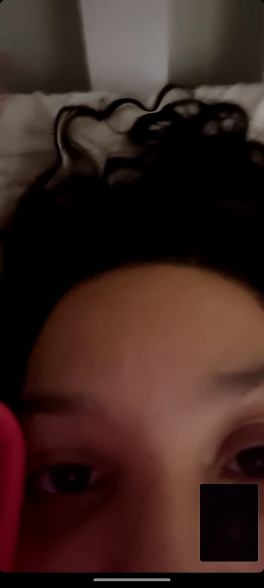
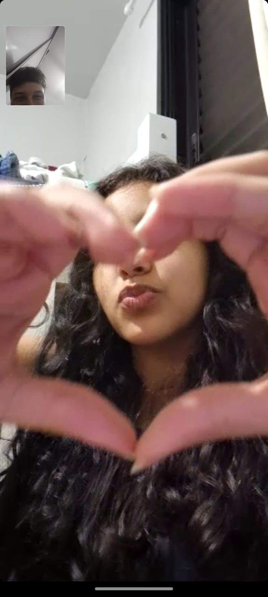
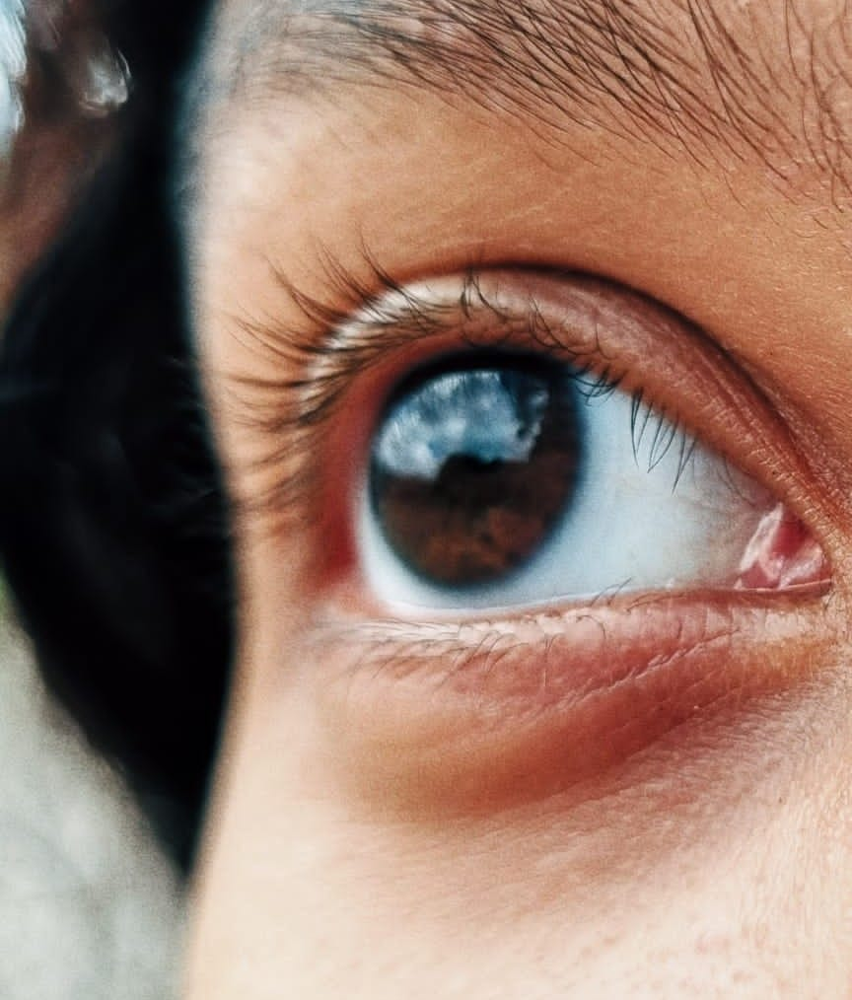
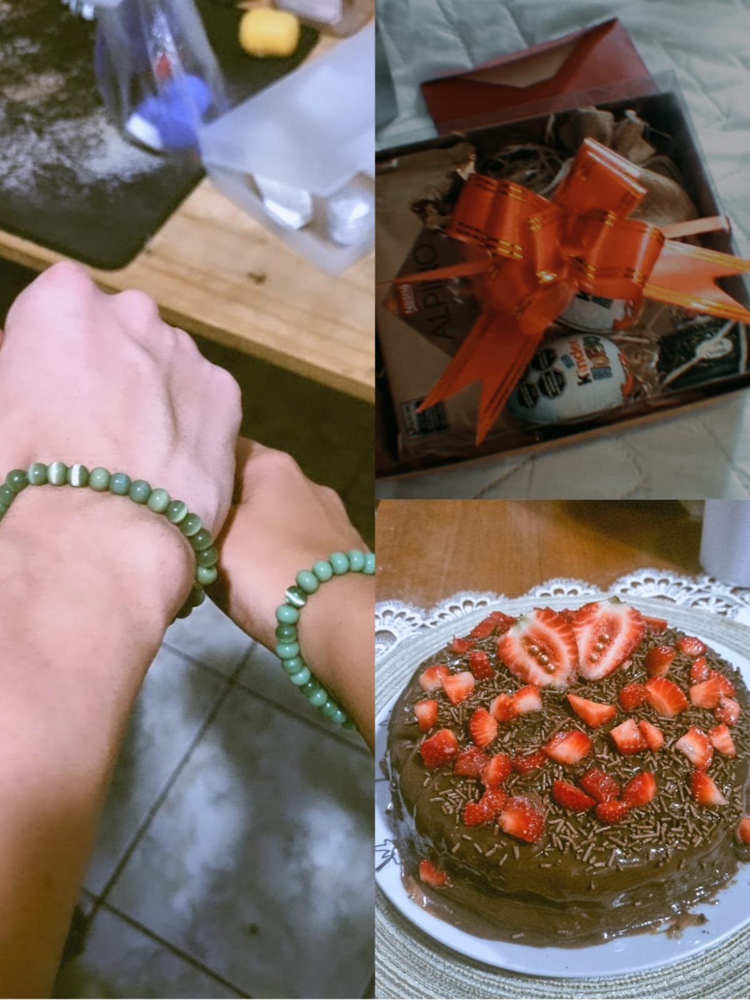
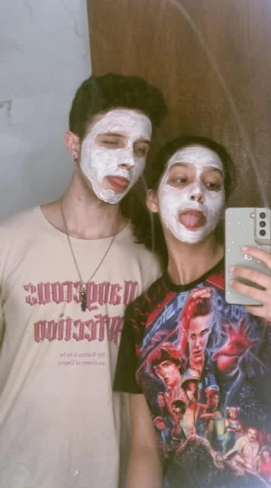

História gay de uma Paulista e um Caiçara

O começo de tudo:
Fala ae, meu nome é Kevin, e esse é site em específico é pra contar sobre como conheci essa garota que foi de uma WebAmiga para o amor da minha vida... Pra resumir melhor, nos conhecemos diretamente do tinder, onde eu tinha entrado no aplicativo por brincadeira dos meus amigos que lá eu irira encontrar que iria fazer eu me apaixonar (já que eu me recusava que isso iria rolar), dito e feito, criei uma conta no tinder e fui conhecendo algumas pessoas (algumas eram bizarras de esquizitas...) e na maior graça do destino eu a conheci, foi a ultima pessoa que eu fui puxar um assunto antes de eu desistir daquela aposta e apagar a minha conta, foi uma conversa curta pois ela sumiu em seguida... mas eu nao poderia perder aquela garota, ela era linda e tinhamos assuntos parecidos e divertidos, que eu queria saber mais dela!
Depois de um tempo tentando puxar assunto com ela pelo insta, ela me reparou e lembrou de mim depois de um tempinho convernsado (foi logo ali que eu percebi que a memoria dela não era lá essas coisas... Vibe do peixinho Dory), depois disso fomos conversando sem parar, percebemos a nossa primeira semelhança ali de que nós NÃO CALAMOS A BOCA e amei isso nela, tava amando nossa interação e eu queria MUITO criar uma amizade foda ali
O inicio da amizade:
No inicio da nossa amizade, eu mantia um lado bem discreto no que eu contava sobre mim e sobre minha vida para ela, por conta de traumas que acabei criando de antigas amizades e meus 2 ultimos relacionamentos, então eu tinha dificuldade querendo ou não de confiar nas pessoas, mas ELA, ela me passou um ar de confiança, uma aura de luz brilhava sobre ela que me deixava TÃO tranquilo que aos poucos eu fui me abrindo sem eu perceber...
O começo dos meus sentimentos por ela:
Uma coisa que eu fui percebendo ao longo da nossa amizade, é que eu estava começando a olhar ela com outros olhos (de uma forma boa), eu ficava admirando as fotos e videos que ela postava sem eu perceber, ficava ouvindo ela falar e ficava hipnotisado enquanto ela falava, sorria e ria que nem besta com nossas palhaçadas diarias, fiquei com um ciume baixo de quando ela tinha me contado que tava gostando de um guri (e ainda com raiva depois que ele magoou ela, fazer oq, ele quem não soube dar valorkkkkkkk).
E eu percebia que eu queria ouvir mais dela, saber como foi seu dia, mesmo se foi produtivo ou não, oq ela comeu, qual foi o treino do dia dela na academia, TUDO sobre ela... eu poderia ter ficado medo por conta do que passei nos ultimos relacionamentos, mas por causa dela o meu medo foi se aproximando mais de uma paixão continua e que só aumentava!
No meu aniversario eu tive mais certeza ainda de quando eu tava sem fé que ia ser um dia legal, mas ela me liga durante a noite, coloca a musica de aniversário da xuxa e me mostra que fez UM BOLO AZUL só pra me mostrar, mesmo distante e com 0 chance de eu comer aquele bolo, ela fez só pra me tirar um sorriso, e ela consegue com facilidade kkkkk
O inicio do meu primeiro amor reciproco:
Aos poucos eu fui percebendo que ela também estava afim, com flertes sendo jogados pra e outros pra cá, a gente foi se revelando boiolinha um pelo outro, mas antes de eu me arriscar eu queria ter mais certeza e fomos subindo bastante nesse sentimento e já não tinha mais como guardar, até que em um certo dia ela me solta um "eu te amo" mlk eu gelei... Mas gelei de felicidas, por ela ter despertado um sentimento que a anos estava guardado, mas que finalmente eu podia soltar e eu disse com tanto orgulho e com sorriso mais BESTA que já dei, mandei meu primeiro "te amo" para ela tbm...
Nosso primeiro encontro:
Depois de alguns dias flertando, decidi finalmente marcar um dia para ir ve-la em SP, ela me convidou para já ir ir na casa dela por dois dias, e eu já ia conhecer os pais dela e nessa hora eu já estava tenso se eles iriam me aprovar bem, enfim FINALMENTE nos encontramos, e foi TÃO bom nosso primeiro abraço (melhor do que eu já tava sonhando). Pegamos metro e trem juntos com a vizinha dela que acompanhoua gente no nosso primeiro encontro, conheci o trampo dela e finalmente chegou o momento de conhecer os pais dela...
E pela minha surpresa foi super tranquilo, eles me fizeram contar um pouco de mim, eles contaram deles e foi SUPER de boa, em seguida fui pro quarto dela enquanto nós trocamos presentes um para o outro, ela me preparou uma caixa TÃO LINDA e que virou um materiais mais especiais pra mim, la vinha uma carta que eu leio toda hora que eu consigo escutar a voz dela enquanto escuto, vinha dois cards com um meme que é a nossa cara, veio kinder UEVOS pq veio da argentina,veio uma barra de chocolate de alpino QUE É O MEU FAVORITO (detalhe que ela nem sabia...) e por fim veio uma pulceira verde para combinar com a dela, que hoje em dia é algo que não sai de mim pra nada.
OBS: No dia seguinte ainda fizemos skincare e um bolo muito gostoso de chocolate juntos!
23/11, o inicio da nossa nova fase:
Na mesma noite em que cheguei, pedimos pizza e aproveitamos para esperar embaixo do prédio dela, ficamos mexendo com os gatos quem ficam por lá, e ela aproveitou para me apresentar para alguns vizinhos importantes da vida dela (como uma que é praticamente a segunda mãe dela, que cuidou dela quando ela era uma criança).
E enquanto nós subimos as famosas escadas sem fim daquele prédio, eu finalmente tomei iniciativa para beija-la la naquela escada mesmo, foi um beijo rapido e bem corrido mas eu já não aguentava mais esperar, e depois dali a gente sempre aguardava um momento só nosso pra gente acabar se beijando dnv e dnv...
E foi no dia seguinte que eu já não queria mais esperar para nos oficializar, eu queria ela pra mim, pra chamar de minha. Dito e feito, fiz o pedido olhando nos olhos dela e ela virou oficialmente minha namorada, foi um dos momentos mais felizes da minha vida desse ano, e isso não me surpreende pois a maioria dos meus momentos bons desse ano estão acontecendo por conta dela estar na minha vida.
Nosso 1*mês:
EM BREVE...